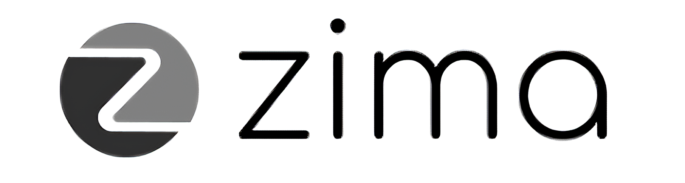
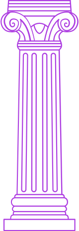
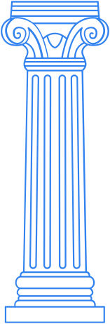

Na ZIMA, nossa cultura é movida pela inovação, buscando soluções em engenharia para desafios reais. A colaboração é o coração da equipe, unindo talentos da Poli em um ambiente de aprendizado. Com forte propósito, transformamos a vida das pessoas através de tecnologias que impactam positivamente a saúde e a sociedade.



Soluções Hospitalares
A ZIMA nasceu da paixão e do talento de um grupo de amigos, estudantes de engenharia da renomada Escola Politécnica da USP (Poli-USP). Em um ambiente acadêmico vibrante e colaborativo, esses jovens visionários uniram suas expertises com um propósito claro: aplicar a engenharia de ponta para desenvolver soluções que impactem positivamente a sociedade, especialmente na área da saúde.
Nossa jornada teve um impulso significativo a partir do Edital Engenheiros 5.0 de 2019, que nos desafiou a idealizar projetos com grande potencial de inovação. Foi nesse contexto que surgiu a ideia inicial do "IC Delivery Robot", um precursor do que viria a ser o HemaBot.
Desde o início, contamos com a valiosa orientação e o profundo conhecimento do Professor Leopoldo Yoshioka, cuja mentoria foi e continua sendo um pilar essencial para o amadurecimento e a excelência de nossos trabalhos.
A resiliência e a capacidade de adaptação da ZIMA foram postas à prova e fortalecidas durante a pandemia de COVID-19. Diante dos desafios impostos, a equipe demonstrou sua agilidade ao adaptar o projeto HemaBot para atender às demandas urgentes do período, contribuindo com uma solução de logística hospitalar em um momento crítico.
Essa experiência não só reafirmou nosso compromisso com a inovação, mas também solidificou nossa crença na engenharia como ferramenta para enfrentar crises e melhorar a qualidade de vida.
Hoje, a ZIMA se orgulha de desenvolver projetos multidisciplinares como o GolgiBot, que revoluciona a automação em farmácias hospitalares; o próprio HemaBot, focado em transporte inteligente e seguro dentro de ambientes de saúde; e o Ciclo Ergômetro, que oferece uma nova abordagem para a reabilitação de pacientes.
Somos mais do que uma equipe de engenheiros; somos inovadores, colaboradores e apaixonados por construir um futuro onde a tecnologia sirva à humanidade, transformando desafios em oportunidades e ideias em realidade.
6
participações em editais do F.P.
Amigos da Poli, desde 2019
119
Alunos passaram pela ZIMA
6
Anos de trajetória do grupo
10
Iniciações cientificas baseadas
em nossos projetos
CONHECIMENTO
APRENDIZADO E
Desenvolvimento
Acessibilidade da
Conheça a trajetória da ZIMA, uma história que começou com a união de mentes brilhantes da Poli-USP e se transformou em um movimento de engenharia dedicada a criar soluções tecnológicas impactantes para o futuro da saúde e da sociedade.
NOSSA HISTÓRIA
-
2019
Nossa jornada teve início oficial em 2019, quando nos engajamos no Edital Engenheiros 5.0. Este foi o catalisador para a ideia do "IC Delivery Robot", precursor do HemaBot. Desde então, contamos com a valiosa mentoria do Professor Leopoldo Yoshioka, um pilar fundamental em nossa evolução.
-
2020
O ano de 2020 desafiou nossa resiliência. Com a chegada da pandemia de COVID-19, a ZIMA adaptou rapidamente o projeto HemaBot. O robô foi modificado para atender às urgentes necessidades de logística hospitalar, demonstrando nossa capacidade de inovar em momentos críticos.
-
2021
Em 2021, continuamos aprimorando o HemaBot, consolidando sua importância em ambientes de saúde e solidificando nossa expertise em automação hospitalar. Este período também marcou o fortalecimento da equipe e a base para a exploração de novos desafios em engenharia.
-
2022
2022 marcou a transição da ZIMA de iniciação científica à grupo de extensão, e com isso surge o primeiro processo seletivo para que alunos da POLI possam ingressar no grupo. Junto a essa grande mudança, um novo projeto começou a ser desenvolvido: o GolgiBot, nascido com o propósito de poupar tempo e facilitar o trabalho da farmácia.
-
2023
A zima participou de não sei oque senec
-
2024
A zima participou de não sei oque senec
-
Hora do Código
A ZIMA esteve presente na Hour of Code, um evento organizado pelo CEE focado em apresentar a USP e suas Engenharias para jovens da rede pública. Durante o evento, pudemos apresentar nosso laboratório e nossos projetos, além de incentivar os alunos a ingressarem na universidade.
-
SenEC
A ZIMA participou da SenEC (Semana Acadêmica de Engenharia Elétrica e Computação), na qual apresentou o grupo e seus projetos aos visitantes, além de ter convidado a Orbis, empresa de engenharia e gestão clínica-hospitalar, e promovido uma palestra com o então diretor executivo da mesma, Eng. Ricardo Maranhão.
-
Meninas na Poli
O grupo também marcou presença em diversas edições do evento Meninas Na Poli, idealizado pelo Diretório Acadêmico da Poli, que tem como foco incentivar o ingresso de meninas nos cursos da Escola Politécnica. Sabemos que a presença feminina na engenharia ainda é baixa, e é nosso dever promover essa mudança!
-
Feira Hospitalar
Com mais de 30 anos de história, a Feira Hospitalar é o maior e mais importante evento de negócios e conteúdo de saúde da América Latina. A ZIMA, em suas duas visitas à feira, buscou conhecer de perto os novos produtos em exibição e extrair ideias que possam servir de melhoria para os nossos projetos.
-
Healthcare Innovation Show
A Healthcare Innovation Show (HIS) é o principal evento de inovação e tecnologia em saúde no continente, ocorrendo anualmente desde 2014. A fim de se manter a par das novas tecnologias surgindo no mercado, a ZIMA visitou a HIS em Out/2025, e lá, nossos membros puderam ter contato com as soluções inovadoras em exposição.
-
Coquetel de Resultados ADP
O fundo patrimonial Amigos da Poli realiza, periodicamente, o Coquetel de Resultados, evento que celebra projetos inovadores e a união de esforços em prol da educação e tecnologia. Durante a noite da 6ª edição da celebração, a ZIMA e os demais grupos de extensão apoiados pelos editais do ADP apresentaram.
-
Feira de Extensão
Todos os anos, no início do período letivo, acontece na POLI a Feira de Extensão, organizada pelo Grêmio Politécnico e destinada aos alunos da instituição, conectando-os com os grupos de extensão. A ZIMA comparece ao evento desde 2023, dispondo seu stand e esclarecendo dúvidas aos interessados em fazer parte da nossa história.